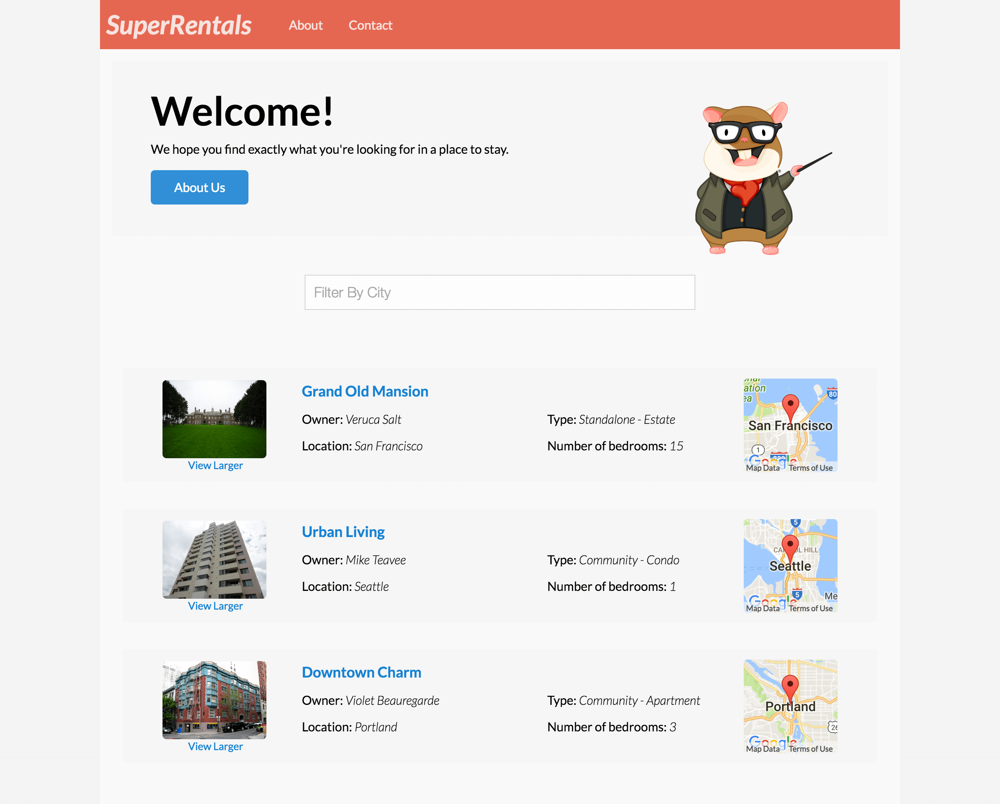

ネストしたルートの作成 編集
これまでに、4つのトップレベルルートを作成しました。
aboutルート: アプリケーションについての情報contactルート: お問い合わせ先に関する情報rentalsルート: 賃貸物件を閲覧するページindexルート:rentalsルートにリダイレクト
rentalsルートにさらに機能を追加します。
受け入れテストから、ユーザーが物件を閲覧したり、検索したり、個々の物件の詳細情報を参照できることを定義しました。
この要件を満たすために、Emberのルートのネスト(入れ子)機能を利用します。
このセクションの最後には、以下の新しいルートの作成が完了しているでしょう。
rentals/indexルート: 物件ページの一般情報を表示し、利用可能な物件を一覧表示する。 ユーザーがrentalsURLにアクセスすると、ネストしたインデックスルートがデフォルトで表示されます。rentals/showルート: 物件ページの一般情報も表示しつつ、選択した物件に関する詳細情報を表示する。showルートは、表示されている物件ID（例えば、rentals/grand-old-mansion(壮大な邸宅))に置き換えられます。
親ルート
以前に、ルートとテンプレートチュートリアルでrentalsルートを設定していました。
このルートのテンプレートを開くと、一番下に{{outlet}}ヘルパーがあります。
outletはネストしたアクティブなルートが描画される場所です。
親ルートを持っているということは、親ルートのテンプレートのコンテンツは、子ルートを閲覧する際に存在することを意味し、ナビゲーション、フッターまたはサイドバーの共通のものを追加することができます。
ネストしたインデックスルートの作成
最初に作成するネストしたルートはインデックスルートです。
ネストしたインデックスルートは、ベースインデックスルートと同様に機能します。
これは、ルートが提供されていないときに描画されるデフォルトのルートです。
したがって、/rentalsにナビゲートすると、Emberはrentals/indexルートをネストしたルートとしてロードしようとします。
ネストしたインデックスルートを作成するには、次のコマンドを実行します。
1 |
ember g route rentals/index |
ルーター(app/router.js)を開くと、rentalsの行が変更されていることが気がつくでしょう。この特別なfunction() {} は、子ルートが必要なので必須です。これはthis.route('index', { path: '/'}); 暗黙的に表しています。
| app/router.js | |
1 2 3 4 5 |
Router.map(function() { this.route('about'); this.route('contact'); this.route('rentals', function() {}); }); |
アプリケーションのindexルートがルーターに書かれていないのと同じで、子ルートのindexルートもルーターに明示的に書くことはしません。
Emberはデフォルトのアクションがユーザーをindexルートに連れて行くことを知っています。
ただし、カスタマイズする場合は、indexルートを書きます。
たとえば、this.route('index', { path: '/custom-path'})と指定することで、インデックスルートのパスを変更できます。
rentals/indexルートを実装していきましょう。
Ember Dataを使うのセクションでは、すべての物件を取得するよう実装しました。
そのfindAllを呼び出している部分を親ルート(rentals)から子ルート(rentals/index)に移します。
| app/routes/rentals.js | |
1 2 3 4 5 6 7 |
import Route from '@ember/routing/route'; export default Route.extend({ model() { return this.get('store').findAll('rental'); } }); |
| app/routes/rentals/index.js | |
1 2 3 4 5 6 7 |
import Route from '@ember/routing/route'; export default Route.extend({ model() { return this.get('store').findAll('rental'); } }); |
すべての物件をネストしたルートのモデルに戻したので、物件一覧のマークアップもメインルートのテンプレートからネストしたインデックスルートのテンプレートに移します。
最後に、ネストしたインデックスルートで検索機能を使えるよう、コントローラを作成する必要があります。
次のコマンドを実行して、ネストしたインデックスルートのコントローラを作成します。
1 |
ember g controller rentals/index |
単にapp/controllers/rentals.jsからapp/controllers/rentals/index.jsにファイル全体をコピーするのではなく、JavaScriptのインポート/エクスポート機能を利用して、rentalsコントローラを再エクスポートし、rentals/indexコントローラで使うやり方でやってみましょう:
| app/controllers/rentals/index.js | |
1 2 3 4 5 6 |
import Controller from '@ember/controller'; import RentalsController from '../rentals'; export default Controller.extend({ }); export default RentalsController; |
ネストしたshowルートの設定
次に、特定の物件の詳細情報を表示する子ルートを作成します。
そのためには、いくつかのファイルの変更が必要です。
特定の物件の情報を取得するには、Ember DataのfindRecord関数を使用します。(詳しくは、「レコードの検索」を参照)
findRecord関数は、ユニークなキーで検索する必要があります。
showルートでは、物件の追加情報を表示するようにします。
これを行うには、アドオンのインストールのセクションで追加したMirageのconfig.jsファイルを変更する必要があります。
特定の物件を返すための新しいルートハンドラを追加します:
| mirage/config.js | |
1 2 3 4 5 6 7 8 9 10 11 12 13 14 15 16 17 18 19 20 21 22 23 24 25 26 27 28 29 30 31 32 33 34 35 36 37 38 39 40 41 42 43 44 45 46 47 48 49 50 51 52 53 54 55 56 57 58 59 60 61 62 |
export default function() { this.namespace = '/api'; let rentals = [ { type: 'rentals', id: 'grand-old-mansion', attributes: { title: "Grand Old Mansion", owner: "Veruca Salt", city: "San Francisco", "property-type": "Estate", bedrooms: 15, image: "https://upload.wikimedia.org/wikipedia/commons/c/cb/Crane_estate_(5).jpg", description: "This grand old mansion sits on over 100 acres of rolling hills and dense redwood forests." } }, { type: 'rentals', id: 'urban-living', attributes: { title: "Urban Living", owner: "Mike Teavee", city: "Seattle", "property-type": "Condo", bedrooms: 1, image: "https://upload.wikimedia.org/wikipedia/commons/0/0e/Alfonso_13_Highrise_Tegucigalpa.jpg", description: "A commuters dream. This rental is within walking distance of 2 bus stops and the Metro." } }, { type: 'rentals', id: 'downtown-charm', attributes: { title: "Downtown Charm", owner: "Violet Beauregarde", city: "Portland", "property-type": "Apartment", bedrooms: 3, image: "https://upload.wikimedia.org/wikipedia/commons/f/f7/Wheeldon_Apartment_Building_-_Portland_Oregon.jpg", description: "Convenience is at your doorstep with this charming downtown rental. Great restaurants and active night life are within a few feet." } } ]; this.get('/rentals', function(db, request) { if (request.queryParams.city !== undefined) { let filteredRentals = rentals.filter(function (i) { return i.attributes.city.toLowerCase().indexOf(request.queryParams.city.toLowerCase()) !== -1; }); return { data: filteredRentals }; } else { return { data: rentals }; } }); // Find and return the provided rental from our rental list above this.get('/rentals/:id', function (db, request) { return { data: rentals.find((rental) => request.params.id === rental.id) }; }); } |
ネストしたshowルートの作成
APIが個々の物件を返す準備ができたので、子ルートのshowルートを作成しましょう。
rentalsルートの時と同じように、ember gを使ってネストしたルートを作成します。
1 |
ember g route rentals/show |
次のような出力が表示されます。
1 2 3 4 5 6 7 |
installing route create app/routes/rentals/show.js create app/templates/rentals/show.hbs updating router add route rentals/show installing route-test create tests/unit/routes/rentals/show-test.js |
まず、ルータ(app/router.js)への変更を見てみましょう。
| app/router.js | |
1
2
3
4
5
6
7 |
Router.map(function() { this.route('about'); this.route('contact'); this.route('rentals', function() { this.route('show'); }); }); |
作成したルートはrentalsルート内に入れ子になっています。
これはEmberに、それが子ルートであり、localhost:4200/rentals/showを通してアクセスされることを伝えています。
アプリケーションにアクセスしたい物件を伝えるには、物件のIDでshowルートのパスを置き換える必要があります。
それと、URLはlocalhost:4200/rentals/物件IDのように簡略化させます。
そのために、次のようにルートを修正します:
| app/router.js | |
1 2 3 4 5 6 7 8 |
Router.map(function() { this.route('about'); this.route('contact'); this.route('rentals', function() { this.route('show'); this.route('show', { path: '/:rental_id' }); }); }); |
これにより、rental_idがルートに渡されます。
IDで検索
次に、 showルートを編集して、リクエストされた物件を取得します。
| app/routes/rentals/show.js | |
1 2 3 4 5 6 7 |
import Route from '@ember/routing/route'; export default Route.extend({ model(params) { return this.get('store').findRecord('rental', params.rental_id); } }); |
ルータで、showのパスに:rental_idを追加したので、modelフックでrental_idを利用できるようになりました。
this.get('store').findRecord('rental', params.rental_id)が呼ばれると、Ember DataはHTTP GETリクエスト/rentals/物件IDを発行します。(詳細はこちら)
テンプレートに物件を追加する
次に、showルートのテンプレート(app/templates/rentals/show.hbs)を変更し、物件の詳細情報を表示します。
localhost:4200/rentals/grand-old-mansionを参照すると、1物件の情報が表示されます。
物件詳細ページにリンクする
個々の物件のページを読み込むことができるようになりましたので、rental-listingコンポーネント内にリンク( link-toヘルパーを使用)を追加して個々のページに遷移できるようにします。
link-toヘルパーには、ルート名とRentalモデルのインスタンスを引数として渡します。
link-toヘルパーの2番目の引数にオブジェクトを渡すると、デフォルトでモデルのIDがURLにシアライズされます。
わかりやすくするためにrent.idを渡すこともできます。
タイトルをクリックすると、その物件の詳細ページが読み込まれるようになります。

お疲れ様でした！ この時点であなたはEmberを使えるようになっているはずです。 Super Rentalsをデプロイして、世界中に共有したり、これをベースとして他のEmberの機能やアドオンを探索したりできますね。 これからEmberを使って野心的なアプリケーションの開発をする際、このチュートリアルがあなたの手助けになっていれば幸いです。
受け入れテスト
特定の物件をクリックしてページの詳細ページを読み込むことができることを確認したいと思います。 タイトルをクリックし、物件の詳細情報が表示されることを確認します。
| /tests/acceptance/list-rentals-test.js | |
1 2 3 4 5 6 7 8 9 |
test('should show details for a specific rental', function (assert) { visit('/rentals'); click('a:contains("Grand Old Mansion")'); andThen(function() { assert.equal(currentURL(), '/rentals/grand-old-mansion', 'should navigate to show route'); assert.equal(find('.show-listing h2').text(), "Grand Old Mansion", 'should list rental title'); assert.equal(find('.description').length, 1, 'should list a description of the property'); }); }); |
この時点で、最初に要件定義した受け入れテストを含む、すべてのテストがパスしているはずです。